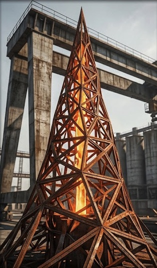
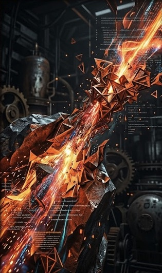

A from-scratch, OpenCascade-style CAD geometry kernel in pure Rust. Linear algebra, topology, a BSP-tree CSG boolean engine, tessellation and STL/STEP writers — with zero third-party dependencies.
Booleans from the BSP CSG engine, lathes, lofts, sweeps and sheet-metal flanges — tessellated by the kernel and written out by its own binary-STL writer. Compiled from CADbuildr foundation designs via castiron. Drag to orbit, scroll to zoom.
If you know BRepPrimAPI and BRepAlgoAPI, you already know your way around.
The same surface is exposed to Python through the ironstream bindings.
use ironstream::prelude::*; fn main() { let block = make_box(Pnt::new(0.0, 0.0, 0.0), 20.0, 20.0, 20.0); let drill = make_cylinder(5.0, 20.0, MeshParams::default()); let part = cut(&block, &drill); // BSP CSG boolean println!("volume = {:.1}", part.volume()); std::fs::write("part.stl", write_binary_stl(part.mesh())).unwrap(); }
import ironstream as ist block = ist.make_box(ist.Pnt(0, 0, 0), 20, 20, 20) drill = ist.make_cylinder(5, 20) part = ist.cut(block, drill) # same kernel, same CSG print(part.volume()) with open("part.stl", "wb") as f: f.write(ist.write_binary_stl(part.mesh()))
This is not a video and not a server: the button below loads Pyodide and a 145 KB WebAssembly build of the IronStream Python bindings, then runs real Python against the real kernel — booleans, volumes and STL bytes computed right here. Edit the code and re-run it.
IronStream exists because OpenCascade showed the way. For more than three decades, Open CASCADE Technology has been the open-source backbone of serious CAD — the geometry kernel beneath FreeCAD, CadQuery, build123d, KiCad's 3D viewer and countless engineering tools. Its architecture is one of the great unsung designs of open-source software.
IronStream is not a fork and shares no code with OCCT. It is an original, from-scratch
re-implementation in pure Rust — but it deliberately keeps OCCT's shape: the same
package boundaries, the same class names, the same way of thinking about points, topology
and boolean operations. Where behaviour matters, IronStream is checked against
674 unit tests ported from the OCCT test suite, and a
parity tracker
audits all 7,084 OCCT classes, one // occt: marker at a time.
The highest compliment you can pay an architecture is to rebuild it from nothing, in a new language, and find that its boundaries were right all along.
| OCCT toolkit | IronStream module | coverage |
|---|---|---|
| gp — points, axes, transforms | gp.rs | 92.0% |
| Geom — curves & surfaces | geom.rs | 92.2% |
| TopoDS — topology | topods.rs | 94.8% |
| BRepPrimAPI — primitives & sweeps | brep_prim_api.rs | ported |
| BRepAlgoAPI — booleans | brep_algo_api.rs | BSP CSG |
| BRepMesh — tessellation | brep_mesh.rs | ported |


The whole kernel is exposed to Python via PyO3 as
import ironstream — same prelude, pyOCCT-style namespaces
(ironstream.gp, .prim, .algo, .io).
On top of it, castiron compiles CADbuildr foundation designs
(Python CAD-as-code) straight to STL/STEP, fully offline — no server, no broker.